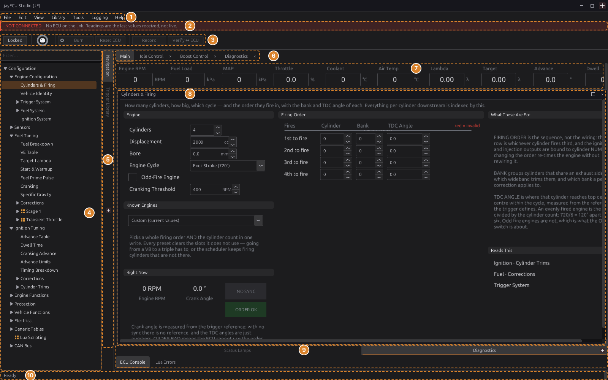
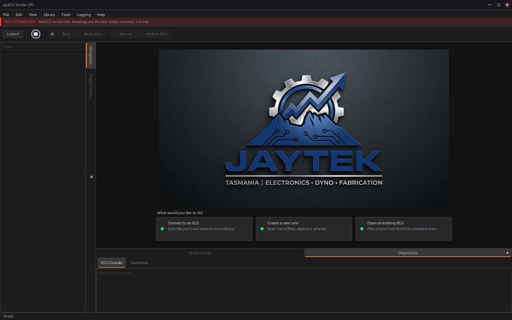
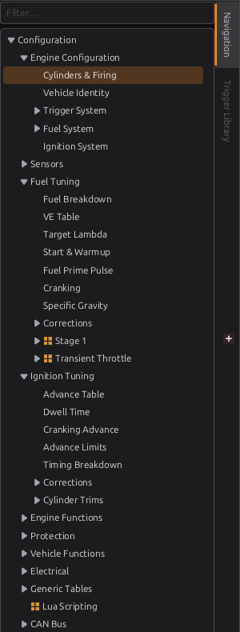
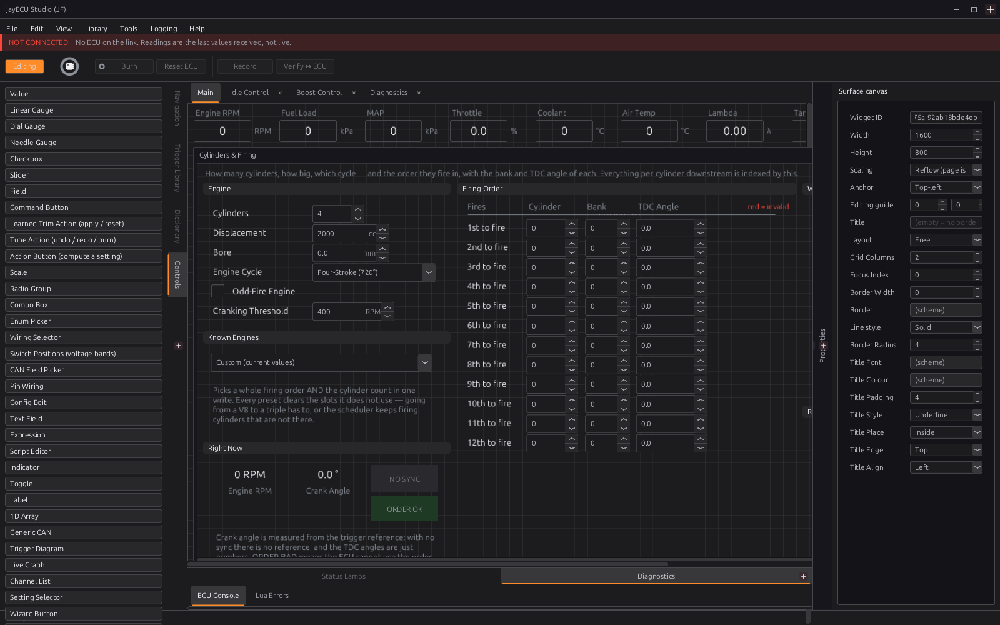
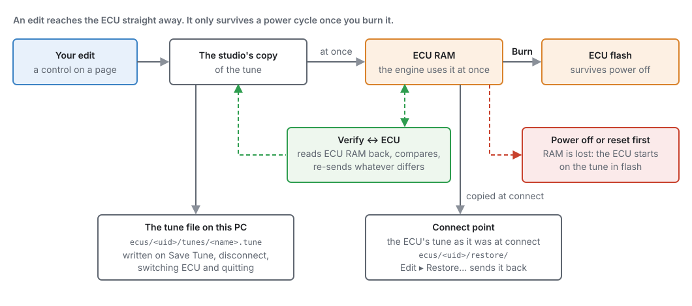
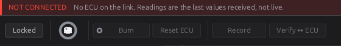
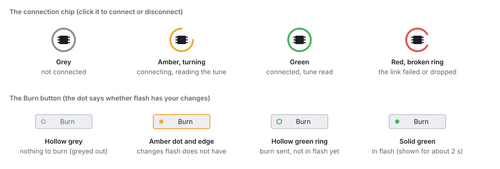
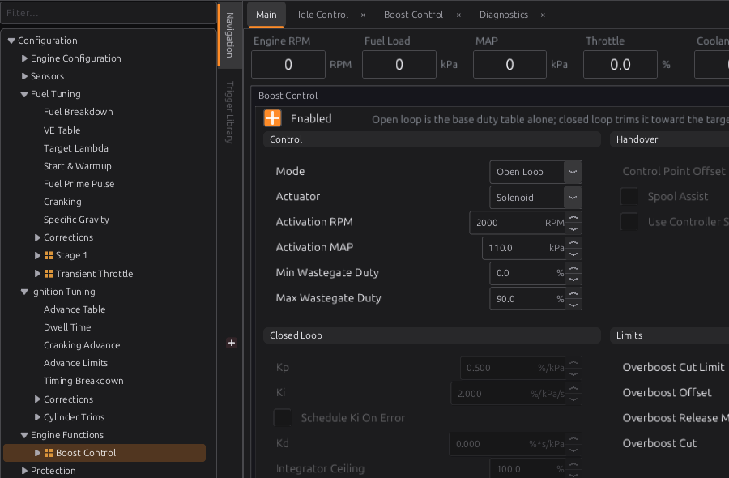

A tour of the studio¶
Basic → Intermediate
In one sentence: jayecu Studio is the program on your PC that shows what the ECU is doing and changes its tune. This chapter names every part of its window and says what each menu item and button does, and when it is available.
Overview¶
Basic
The studio does three jobs:
- It shows the engine. While it is connected, gauges, tables and readouts update as the ECU sends new readings.
- It changes the tune. The tune is the set of settings the ECU runs on: fuel tables, ignition tables, sensor calibrations and so on. You change them on pages, and each change is sent to the ECU straight away.
- It keeps your files. Every ECU the studio has met gets a folder on your PC with its tune, its pages and a history of what was on the ECU each time you connected.
You do not need an ECU to use the studio. You can open a saved tune, or start a new one, and work on it at a desk. Chapter 5 covers connecting.

- Menu bar: File, Edit, View, Library, Tools, Logging, Help. Every item is listed in Menu and toolbar reference.
- Notice strip: a red or amber line that stays up for as long as something important is true, such as NOT CONNECTED, KEY OFF or NO TUNE ON THE ECU.
- Toolbar: Locked/Editing, the connection chip, Burn, Reset ECU, Record and Verify ↔ ECU.
- Navigation tree: every page of the tune, in folders. Click a name to open its page.
- Dock tabs: the side strip that switches between the panels sharing that side of the window (here Navigation and Trigger Library).
- Surface tabs: your workspaces. Each tab has its own instruments and remembers which page it had open.
- Readout strip: live values across the top of the Main tab.
- Page window: the page you opened from the tree. It has its own title bar, with maximise and close buttons.
- Bottom docks: Status Lamps and Diagnostics (the ECU's own text console and Lua errors).
- Status bar: messages on the left. While connected, a live summary of the link on the right.
Concepts¶
Basic → Intermediate
The landing page¶
When no ECU project is open, the centre of the window shows three choices:
- Connect to an ECU: look for an ECU on the USB ports and open its project (chapter 5).
- Create a new tune: start a tune offline, from a definition (the same as File ▸ New Tune…).
- Open an existing ECU: pick one of the ECUs the studio already knows (the same as File ▸ Open ECU…).
The landing stays up until a project has actually opened. If you cancel a picker, you are back where you started. File ▸ Close ECU brings the landing back.

Projects, tunes and definitions¶
Three words come up throughout the studio:
- ECU project: everything the studio keeps for one ECU, in a folder named after the ECU's serial number (its uid): its tunes, its pages and navigation tree, and its connect points. A tune started offline gets a project of its own too.
- Tune: one named set of settings for that ECU, stored as a
.tunefile. An ECU project can hold several; the studio remembers which one you had open. - Definition (the studio also calls it a schema or meta): the file that describes a firmware version: every setting's name, units, range and position, and every live channel. The studio needs the right definition to read a tune at all. It matches them by the layout hash, a short code that changes whenever the firmware's settings layout changes.
The folders live in your user data folder: ~/.local/share/jayecu/jayecu Studio/ on Linux,
%APPDATA%\jayecu\jayecu Studio\ on Windows. ECU projects are under ecus/, definitions under
meta/ and studio recordings under datalogs/. Chapter 48 covers the files in detail.
The navigation tree¶
The tree on the left lists every page, grouped in folders: Configuration ▸ Fuel Tuning ▸ VE Table, and so on. A name that underlines when you point at it has a page behind it; click it and the page opens. A folder with no page of its own only expands.
The tree shows only what this tune uses. A page that belongs to a feature is listed only while that feature is switched on. Boost Control appears under Engine Functions once boost control is enabled, Launch Control once launch is enabled, and so on. A node shown because its feature is on carries a small orange grid icon. The tree updates the moment the setting changes.
To reach a page that is hidden, type in the Filter box above the tree. A search also finds hidden pages and shows them dimmed. Open the page, switch the feature on, and the page joins the tree.
Right-click the tree for Expand All, Collapse All, Expand and Collapse. In Editing mode the same menu also changes the tree itself (chapter 49).

Pages, surfaces and tabs¶
A page is one screen of settings and readouts, such as Cylinders & Firing or VE Table. It opens in a page window in the middle of the studio, with its name in the window's title bar. The window can be maximised, or closed with its ×.
Behind the page window is a surface: a workspace with its own live instruments. The shipped layout for the jaytek_v1 board has four surfaces open as tabs: Main, Idle Control, Boost Control and Diagnostics.
Each tab remembers its own page. Open the VE table on Main, switch to Idle Control, and the idle tab shows its own page. Switch back and Main shows the VE table again. The first time you visit a tab it opens on the page it was made for. Closing a tab's page window makes that tab forget it, so the tab comes back empty until you open another page on it.
A tab that is all instruments, such as Diagnostics, does not take page windows. If you pick a page in the tree while it is in front, the page opens on a tab that does take pages.
Diagnostics shows every live channel the ECU sends, one subject at a time: pick the view (Engine & Trigger, Fuel, Spark, Outputs & Bridges, …) from the chooser at its top. On Outputs & Bridges each output pin reads what it is doing: a Generic output reads HI or LOW when it is digital and its duty in % when it is PWM, and a pin that is not a Generic output reads what it is instead: Coil, Injector or Unused.
The Main tab is always there. Other tabs can be closed with their ×; a closed tab is kept and can be brought back with View ▸ Reopen Surface…. View ▸ New Surface Tab adds an empty one, and View ▸ Delete Surface… removes one for good. Double-click a tab's name (or press F2) to rename it. Building your own surfaces is chapter 49.
The tools in the Tools menu (Trigger Designer, Engine Cycle, Trigger Log, Knock Scope, Auto Tune) open as tabs of their own in the same strip.
Docks¶
The panels round the edge of the window are docks:
| Dock | Where it starts | What it holds |
|---|---|---|
| Navigation | left | the navigation tree |
| Trigger Library | left | the trigger wheels you can pick from (chapter 16) |
| Diagnostic Trouble Codes | right | active and stored fault codes, refreshed once a second while connected (chapter 44) |
| Status Lamps | bottom | a grid of on/off lamps from the layout |
| Diagnostics | bottom | ECU Console (the ECU's own text output) and Lua Errors |
| Dictionary, Controls | left, Editing mode only | every setting and channel; the widgets you can place on a page |
| Properties | right, Editing mode only | the settings of the selected widget |
Docks that share a side of the window sit on tabs; click the side strip to switch between them. Close a dock with its ×, or tick and untick it in the View menu. The View ticks always match what is on screen, and a dock you show again returns to where you last had it. Which edge each side's tab strip sits on, and whether a side is used at all, are set in Edit ▸ Preferences… ▸ Appearance.
To move a dock, drag it by its tab. Over another part of the window, the place it would dock is highlighted; let go there to dock it. Let go anywhere else and it floats in a window of its own. On a crowded layout almost everywhere offers a place to dock, so hold the right mouse button while you drag: nothing is highlighted, and the dock stays floating wherever you let go. Press Esc before you let go to cancel the move.
Locked and Editing¶
The first button on the toolbar switches the studio between two modes. The studio always starts in Locked.
| Locked (the button reads Locked) | Editing (the button is orange and reads Editing) | |
|---|---|---|
| What you are doing | using the pages: reading values, changing the tune | changing the pages themselves: moving and adding widgets, reorganising the tree |
| The tune | you can change it; changes go to the ECU | locked: values cannot be changed |
| The tree | only the pages this tune uses | every node, plus New node… rows to add more |
| Docks | Navigation, Trigger Library, DTCs, Status Lamps, Diagnostics | the same, plus Dictionary, Controls and Properties |
| Notice strip | shown | hidden |
Each mode remembers its own arrangement of docks, so the extra panels you open for editing do not clutter the screen you tune from.

Editing locks the tune
If a value will not change when you type in it, look at the first toolbar button. In Editing mode the tune is read-only. Click the button to go back to Locked.
Where an edit goes: RAM, flash, and the file on your PC¶
Intermediate
This is the most important idea in the studio. When you change a value on a page while connected:
- The studio's copy of the tune changes.
- The change is sent to the ECU straight away and lands in the ECU's RAM. The engine runs on it from that moment.
- It is not in the ECU's flash memory yet. If the ECU loses power or is reset now, it starts up on the tune that is in flash, and the change is gone from the ECU.
- Burn copies the tune from RAM into flash. Only then does it survive a power cycle.
Separately, the studio saves its copy to the tune file on your PC when you choose File ▸ Save Tune, when you disconnect, when you switch to another ECU and when you quit. So the file on your PC and the ECU's flash are two different things: a burn does not save the file, and saving the file does not burn.

Two more copies appear in Figure 4.5:
- Verify ↔ ECU reads the whole tune back from the ECU, compares it byte for byte with the studio's copy, and sends again any part that differs. The status bar reports either Verify: ECU matches the project tune or Verify: re-pushed N byte(s) to the ECU. On a jayecu ECU a re-push goes to RAM, so burn afterwards.
- A connect point is the ECU's tune exactly as it was read when you connected. It is kept on your PC, and Edit ▸ Restore Tune to Connect Point sends it back to the ECU. Chapter 5 explains connect points.
The toolbar¶

- Locked / Editing: switches mode (above).
- The connection chip: click it to connect; click it again to disconnect. Its ring shows the state of the link (Figure 4.7).
- Burn: writes the tune in the ECU's RAM to its flash. It is only enabled when there is something to burn. The ECU itself reports whether RAM and flash differ, so the button also lights for changes the studio did not make (an autotune run on the ECU, for example). Before burning, the studio sends any edit it is still holding back. The button turns green only once the ECU reports that flash has the tune; if that has not happened within 8 seconds, the dot stays amber.
- Reset ECU: restarts the ECU through its own
resetcommand. The ECU first waits, for up to 4 seconds, for a burn in progress to reach flash. Changes that were never burned are lost, and the status bar says so. - Record: starts and stops a recording of every live channel to a file on your PC (the same as Logging ▸ Start/Stop Recording). The button reads Stop while recording.
- Verify ↔ ECU: the check described above.

The notice strip¶
Between the menu bar and the toolbar, a strip stays up while one of these is true. It shows in Locked mode only.
| Notice | What it means |
|---|---|
| NOT CONNECTED (red) | No ECU is on the link. Any readings on screen are the last values received, not live ones. |
| NO TUNE ON THE ECU (red) | The ECU started without a valid tune, so it is not running and every reading but the battery is 0. Put a tune on it, burn, and press Reset ECU (chapter 47). |
| KEY OFF (amber) | The ECU is powered from USB alone, with the ignition off. Only the battery voltage is read; other sensor readings and calibrations wait for 12 V. |
| IGNITION DISABLED, INJECTORS DISABLED, or both (amber) | The ignition or injector outputs are switched off in the engine configuration. The engine will crank but not start until they are switched back on (chapter 15). |
The status bar¶
The left of the status bar shows the latest message: Ready at start-up, Connected: jaytek_v1 · … once an ECU has identified itself, Disconnected, and short reports from whatever you just did.
While readings are arriving, the right-hand side shows a live summary of the link:
- ● N frames · R Hz: how many readings have arrived and how many per second. If none arrives for more than 1.5 seconds it changes to ○ no telemetry for T s, so a frozen link cannot pass for a steady engine.
- On a jayecu ECU it adds the definition's layout hash, engine speed (rpm), coolant temperature (clt), and the state of the Lua script: Lua OK, Lua Disabled, or Lua Load Err / Lua Run Err with the script line number (chapter 35).
Procedure: a first walk round the studio¶
Basic
You can do all of this without an ECU. It uses a new tune started offline.
- Start the studio. It opens on the landing page (Figure 4.2), in Locked mode, with NOT CONNECTED in the notice strip.
-
Click Create a new tune. The New Tune dialog asks for a Tune Name and a Schema (ECU firmware layout): pick the definition for your ECU's firmware and click Create. The studio builds the tune from that definition's defaults and opens it. The window now looks like Figure 4.1.
-
Open a page. In the tree, expand Configuration ▸ Engine Configuration and click Cylinders & Firing. The page opens in a window over the Main tab.
- Find a page that is switched off. Type
boostin the Filter box. Boost Control appears, dimmed. Click it, tick Enabled on its page, and clear the filter: Boost Control is now in the tree under Engine Functions, with the orange icon (Figure 4.8). Untick Enabled again if you do not have a turbocharger. - Change tab. Click Idle Control in the tab strip. It opens on its own page. Click Main, and your last page comes back.
- Hide and show a dock. Untick View ▸ Diagnostics; the bottom panel goes. Tick it again and it comes back where it was.
- Try Editing mode. Click Locked. It turns orange and reads Editing, and the Controls and Properties docks appear (Figure 4.4). Click it again to return to Locked.
- Close the project. File ▸ Close ECU takes you back to the landing page. Your tune was saved as you went; if you changed the layout, the studio asks whether to save it.

Examples¶
Intermediate
Example 1: checking a customer's tune at a desk
You have a customer's ECU project on your laptop and no car.
- File ▸ Open ECU… and pick the ECU from the list. If it has more than one tune, pick one.
- Walk the tree. Only the features this tune uses are listed, so the tree is a quick summary of how the car is set up.
- Any change you make is kept in the studio's copy and written to the tune file when you save, close or quit. It reaches the ECU at the next connection, when the studio shows you the differences and asks which tune to keep (chapter 5).
Example 2: a tuning session at the car
- Connect (chapter 5). Wait for the chip to turn green.
- Press Record before you start the engine, so the session is logged.
- Tune. Each change reaches the engine at once, and Burn turns amber.
- When you are happy with a set of changes, press Burn and wait for the green dot.
- Press Verify ↔ ECU before you leave. Verify: ECU matches the project tune means the ECU holds exactly what the studio shows.
- Press Stop, then click the chip to disconnect. The tune file is saved as the link closes.
Pitfalls and troubleshooting¶
Basic → Intermediate
| Symptom | Likely cause | Check |
|---|---|---|
| A value will not change when you type in it | Editing mode | The first toolbar button: click Editing to go back to Locked |
| A menu item is greyed out | It needs something the studio does not have yet | See the Available column in the reference below: most need a project open, or a connected ECU |
| A menu item you expected is missing | It does not apply to this kind of ECU | Tools such as Knock Scope, Trigger Log and Reset ECU are only offered for a jayecu definition, not for an imported TunerStudio one |
| File ▸ Close ECU, New Tune… or Open ECU… is greyed out | An ECU is connected, or a connection is starting | Disconnect first (click the chip) |
| A page you know exists is not in the tree | Its feature is switched off | Type its name in Filter, open it, and switch the feature on |
| Changes are gone after the ignition was cycled | They were never burned | Watch the Burn button: amber means flash does not have your changes |
| A tab shows no page | You closed its page window, so the tab forgot it | Pick a page in the tree |
| A dock has disappeared | It was closed with its × | Tick it in the View menu |
| The status bar says ○ no telemetry | The link has stopped delivering readings | The USB cable and the ECU's power; see chapter 5 |
Menu and toolbar reference¶
Intermediate
The studio offers only what the ECU in front of it can do. An item that does not apply to this kind of ECU is not shown at all. An item that applies but cannot be done yet is shown greyed out, and its keyboard shortcut does nothing either. The menus are re-checked four times a second, so an item comes alive the moment it can be used.
In the tables, a project means an ECU project or tune is open; connected means the chip is green (the ECU has identified itself and its tune has been read); offline means no link is open or opening.
File¶
The open ECU's documents: its tunes and its layout.
| Item | Shortcut | What it does | Available |
|---|---|---|---|
| New Tune… | Ctrl+N | Starts a tune offline from a definition in the studio's library, with that definition's default values. | offline |
| Open ECU… | Ctrl+O | Lists every ECU project the studio knows; pick one, then one of its tunes. An ECU with no saved tune opens on its definition's defaults, named defaults. | offline |
| Open Tune… | Ctrl+Shift+O | Lists this ECU's tunes, its connect points (marked (connect point)) and the tunes saved before firmware updates (marked (firmware backup)), newest first. File… picks a .tune file from anywhere instead: it is copied into this ECU's tunes under its own name (numbered if that name is taken) and opened. Saves the open tune first. If connected, asks whether to send the chosen tune to the ECU. |
a project |
| Recent ECUs | The last eight ECU projects opened. The list is read when the studio starts. | offline | |
| Save Tune | Ctrl+S | Writes the studio's copy of the tune to its file. Does not burn. | a project |
| Save Tune As… | Saves the open tune under a new name, which becomes the open tune. | a project | |
| Open Layout… | Replaces this project's pages, tree and surfaces with a layout file (.gui or .json). Asks first if the current layout has unsaved changes. |
a project | |
| Save Layout | Ctrl+Shift+S | Saves this project's pages, tree and surfaces. | a project |
| Save Layout As… | Saves them to a file you choose, to use on another ECU. | a project | |
| Close ECU | Closes the project and returns to the landing page. The tune is saved; unsaved layout changes are asked about. | a project, offline | |
| Quit | Ctrl+Q | Closes the studio, with the same save rules. Refused while a firmware update is writing. | always |
Unsaved layout changes are the only thing the studio asks about when closing: the tune saves itself. The question can be answered once and remembered (Don't ask again); change the answer in Edit ▸ Preferences… ▸ Editor ▸ Surface ▸ On exit with unsaved changes.
Edit¶
| Item | Shortcut | What it does | Available |
|---|---|---|---|
| Undo / Redo | Ctrl+Z / Ctrl+Y | With a page focused in Locked mode, steps back or forward through your tune edits and sends the restored values to the ECU. In Editing mode, steps through layout changes. | a project |
| Cut / Copy / Paste | Ctrl+X / Ctrl+C / Ctrl+V | Act on the selected widgets while Editing. Tables have their own copy and paste on their right-click menu (Clipboard). | a project |
| Restore Tune to Connect Point | Puts the tune back to what the ECU held when you connected, on screen and on the ECU. Burn afterwards to keep it. | jayecu ECU, connected | |
| Preferences… | Units, appearance, connection, editor, datalog, diagnostics, keyboard and update settings. | always |
View¶
| Item | What it does | Available |
|---|---|---|
| Navigation, Properties, Dictionary, Controls | Show or hide these docks. | always |
| Status Lamps, Diagnostics, Diagnostic Trouble Codes, Trigger Library | Show or hide these docks. | always |
| Show Hidden Widgets | While Editing, also draws the widgets a page hides under its conditions, outlined, so you can reach them. | Editing mode |
| New Surface Tab | Adds an empty surface. | a project |
| Delete Surface… | Removes a surface and its contents. The last surface cannot be deleted. | a project |
| Reopen Surface… | Brings back a surface tab you closed. | a project |
Library¶
What the studio keeps, as opposed to what it does.
| Item | What it does | Available |
|---|---|---|
| Trigger Library | Shows the Trigger Library dock (chapter 16). | always |
| Import Trigger Wheels… / Export Trigger Wheels… | Moves trigger wheel designs between PCs as a .json file. |
always |
| Load ECU Definition… | Loads a definition file (.meta or .json) without opening a tune. |
offline |
| Import TunerStudio .ini… | Turns a TunerStudio .ini into a definition and a project, so the studio can work with an ECU that speaks that protocol. |
offline |
Tools¶
Instruments that measure something. Each opens as a tab.
| Item | What it does | Available |
|---|---|---|
| Trigger Designer | Design and test trigger wheels (chapter 16). | jayecu definitions |
| Engine Cycle | One engine cycle of events, captured by the ECU (chapter 43). | connected |
| Trigger Log | The raw trigger edges the ECU saw (chapter 43). | jayecu ECU, connected |
| Knock Scope | The knock system's last capture (chapter 41). | jayecu ECU, connected |
| Auto Tune | The VE autotuner (chapter 40). | definitions with an autotuner; connected |
| Reset ECU | Same as the toolbar button. | jayecu ECU, connected |
| Install Firmware Kit… | Adds a firmware kit someone has sent you (its kit.json), to be offered like a downloaded one (chapter 46). |
always |
Logging¶
| Item | What it does | Available |
|---|---|---|
| Start Recording / Stop Recording | Records live channels to a file on this PC, one row per reading received, named jayecu_<date>_<time>.msl. Same as the Record button. A recording also stops when you disconnect. |
a definition loaded and a link open, or while recording |
| Recording Channels… | Chooses which channels a PC recording carries. Leave it empty to record every channel. | a definition loaded |
| Onboard Logging… | Sets up the ECU's own logger, which writes to its SD card (chapter 42). | jayecu definitions, a project |
| Logs on Card… | Lists and copies the logs on the ECU's SD card when your PC can see the card. | jayecu definitions |
| Open Logs Folder | Opens the folder PC recordings are written to. | always |
A recording can also start by itself each time you connect: Edit ▸ Preferences… ▸ Datalog ▸ Record every session. It is off by default.
Help¶
| Item | Shortcut | What it does | Available |
|---|---|---|---|
| User Manual | F1 | Opens this manual, installed with the studio, in your web browser. | always |
| Lua API Reference | Opens the Lua reference for the loaded definition in your web browser (chapter 35). | definitions that declare Lua functions | |
| Check for Updates… | Looks online for a newer studio and newer ECU firmware — the same check as Check now in Preferences. | always | |
| Add Missing Navigation Entries… | Offers the navigation entries the definition has that your tree does not, and adds the ones you pick. Nothing is changed or removed (chapter 49). | Editing mode, with a project open, when the definition has a navigation tree | |
| About jayecu Studio… | The studio's version. | always |
Toolbar¶
| Button | Available |
|---|---|
| Locked / Editing | always |
| Connection chip | always (click to connect or disconnect) |
| Burn | when the ECU has changes its flash does not |
| Reset ECU | jayecu ECU, connected |
| Record / Stop | a definition loaded and a link open, or while recording |
| Verify ↔ ECU | connected, with the tune read |
Related¶
- Chapter 3 — Installing jayecu Studio
- Chapter 5 — First connection
- Chapter 42 — Datalogging and analysis
- Chapter 44 — Diagnostics and trouble codes
- Chapter 48 — Tunes, layouts and backups
- Chapter 49 — Customising the studio (Editing mode, surfaces, widgets)